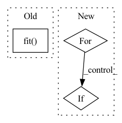

Pattern ID :27956
Before Change
def test_enrich_with_features(log, user_features, item_features, model):
model.fit( log, user_features, item_features)
test_pair = log.filter(
(sf.col("item_id") == "i3") & (sf.col("user_id") == "u2")
)
pred_for_test = (After Change
(sf.col("item_id") == "i3") & (sf.col("user_id") == "u2")
)
for user_f, item_f in [[None, None], [user_features, item_features]]:
_fit_predict_compare_features(
model, log, user_f, user_f, item_f, test_pair
)
// холодный пользователь
if item_f is not None:
_fit_predict_compare_features(
model,
log.filter(sf.col("user_id") != "u2"),In pattern: SUPERPATTERN
Frequency: 3
Non-data size: 3
Instances Fragment ID: 82885453
Project Name: sb-ai-lab/replay
Commit Name: 4e8aafa35332ac0817814a76e08a2a200980e015
Time: 2021-06-18
Author: AAVolodkevich@sberbank.ru
File Name: tests/models/test_lightfm_wrap.py
M Class Name: AnonimousClass
N Class Name: AnonimousClass
M Method Name: test_enrich_with_features(4)
N Method Name: test_enrich_with_features(4)
M Parent Class:
N Parent Class:
M File Name: tests/models/test_lightfm_wrap.py
N File Name: tests/models/test_lightfm_wrap.py
M Start Line: 136
M End Line: 157
N Start Line: 171
N End Line: 188
Before Change
save_freq="epoch",
)
model.fit( train_datagen, epochs=epochs, validation_data=test_datagen, callbacks=[sv], verbose=1)
logging.info("Model trained succesfully")
def predict(self, text, sentimemt):After Change
scheduler = get_linear_schedule_with_warmup(optimizer, num_warmup_steps=0, num_training_steps=num_train_steps)
best_loss = np.inf
for epoch in range(epochs):
train_loss = train_fn(train_dataloader, model, optimizer, DEVICE, scheduler)
valid_loss = eval_fn(test_dataloader, model, DEVICE)
if valid_loss < best_loss:
torch.save(model.state_dict(), "model.pt")
print(f"Epoch:{epoch} train loss -- > {train_loss : .3f} valid loss --> {valid_loss : .3f}") Fragment ID: 82885454
Project Name: shahules786/twitter-emotions
Commit Name: ad9e74dd9a5a025e017efa75af189faf1c9985c0
Time: 2021-04-05
Author: shahules@Shahuls-MacBook-Air.local
File Name: twitteremotions/emotions.py
M Class Name: TwitterEmotions
N Class Name: TwitterEmotions
M Method Name: train(6)
N Method Name: train(6)
M Parent Class:
N Parent Class:
M File Name: twitteremotions/emotions.py
N File Name: twitteremotions/emotions.py
M Start Line: 34
M End Line: 49
N Start Line: 34
N End Line: 56
Before Change
steps_per_epoch = self.config.steps_per_epoch or (self.data.train_data_size // self.data.train_batch_size)
history = self._model.fit(
self.data.train_gen,
steps_per_epoch=steps_per_epoch,
use_multiprocessing=False,
callbacks=[EarlyStoppingWhenSignaled(lambda: self._stop_training)],
)
if "accuracy" in history.history:
train_accuracy = np.mean(history.history["accuracy"])
else:
train_accuracy = np.mean(history.history["acc"])After Change
progress_bar = trange(steps_per_epoch, desc="Training: ", leave=True)
train_accuracy = 0
for i in progress_bar: // tqdm provides progress bar
if self._stop_training:
break
data, labels = self.data.train_gen.__next__() Fragment ID: 82885455
Project Name: fetchai/colearn
Commit Name: 961ffd56a4dc73615f93607553f6d2c35b8e0f50
Time: 2020-10-15
Author: jiri.vestfal@fetch.ai
File Name: colearn_examples/keras_learner.py
M Class Name: KerasLearner
N Class Name: KerasLearner
M Method Name: _train_model(1)
N Method Name: _train_model(1)
M Parent Class: BasicLearner,ABC
N Parent Class: BasicLearner,ABC
M File Name: colearn_examples/keras_learner.py
N File Name: colearn_examples/keras_learner.py
M Start Line: 38
M End Line: 49
N Start Line: 33
N End Line: 54